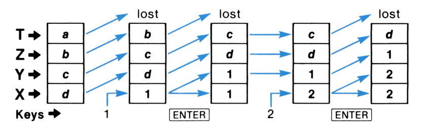
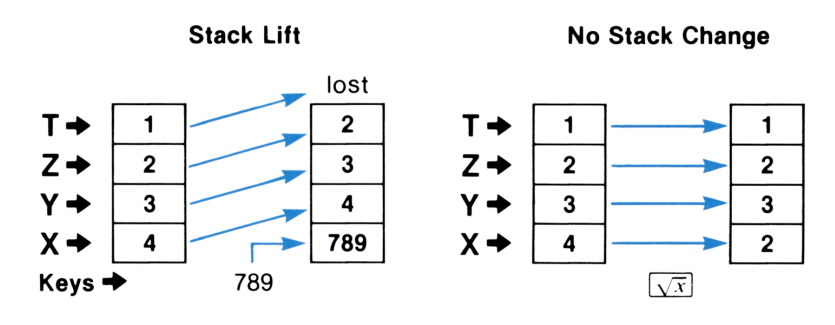
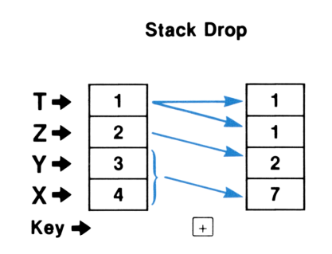
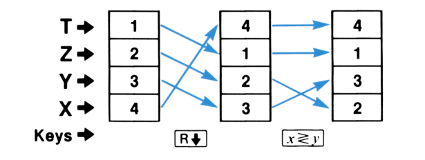
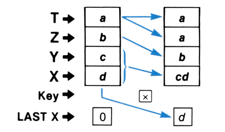
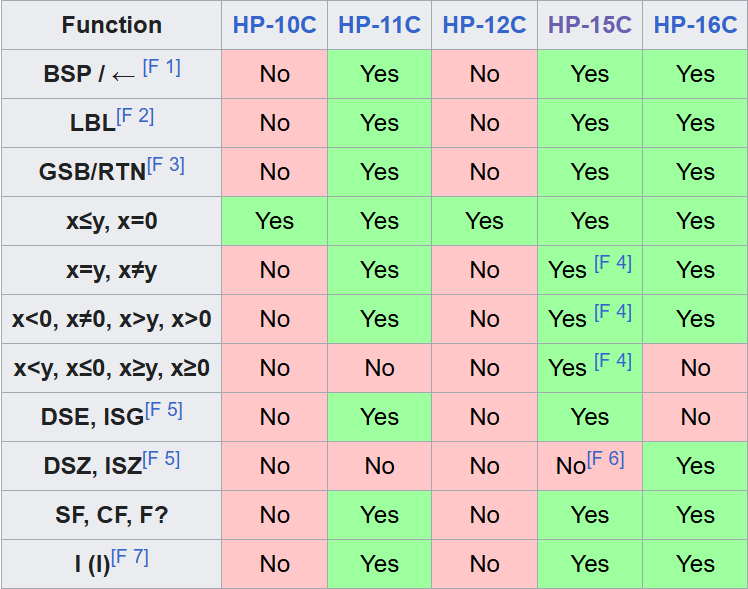

HP Voyagers
February 22, 2025

https://voyagersguidebook.wixsite.com/voyagersguidebook/the-omni
Voyager Series
- 5-Model Calculator Series
- RPN! 4-level stack
- HP Nut Processor
- Very early LCD 7-segment with period/comma
- Keystroke Programmable
- William Kahan - Turing Award 1989 for numerical analysis
Voyager Series
- HP-10C - Basic Scientific (1982-1984)
- HP-11C - Mid-Range Scientific (1981-1989)
- HP-12C - Business/Financial (1981-present)
- HP-15C - High-End Scientific
(1982-1989, 2011, 2023) - HP-16C - Computer Programmer (1982-1989)

HP-10C Owner's Handbook

HP-10C Owner's Handbook

HP-10C Owner's Handbook

HP-10C Owner's Handbook

HP-10C Owner's Handbook

https://en.wikipedia.org/wiki/Hewlett-Packard_Voyager_series

https://en.wikipedia.org/wiki/Hewlett-Packard_Voyager_series

https://en.wikipedia.org/wiki/Hewlett-Packard_Voyager_series → Chartered Financial Analyst Exam

https://en.wikipedia.org/wiki/Hewlett-Packard_Voyager_series

https://en.wikipedia.org/wiki/Hewlett-Packard_Voyager_series

https://en.wikipedia.org/wiki/Hewlett-Packard_Voyager_series

https://en.wikipedia.org/wiki/Hewlett-Packard_Voyager_series

https://en.wikipedia.org/wiki/Hewlett-Packard_Voyager_series

https://en.wikipedia.org/wiki/Hewlett-Packard_Voyager_series
Emulators
Ideas for Forth?
- RPN can have mass appeal
- 4-levels might be enough
- Beauty matters
- Keystrokes are very direct + icons vs words